Our research develops mathematically grounded and computationally efficient frameworks for multiscale biological systems, integrating applied mathematics, scientific machine learning, and computation for biomedical discovery.
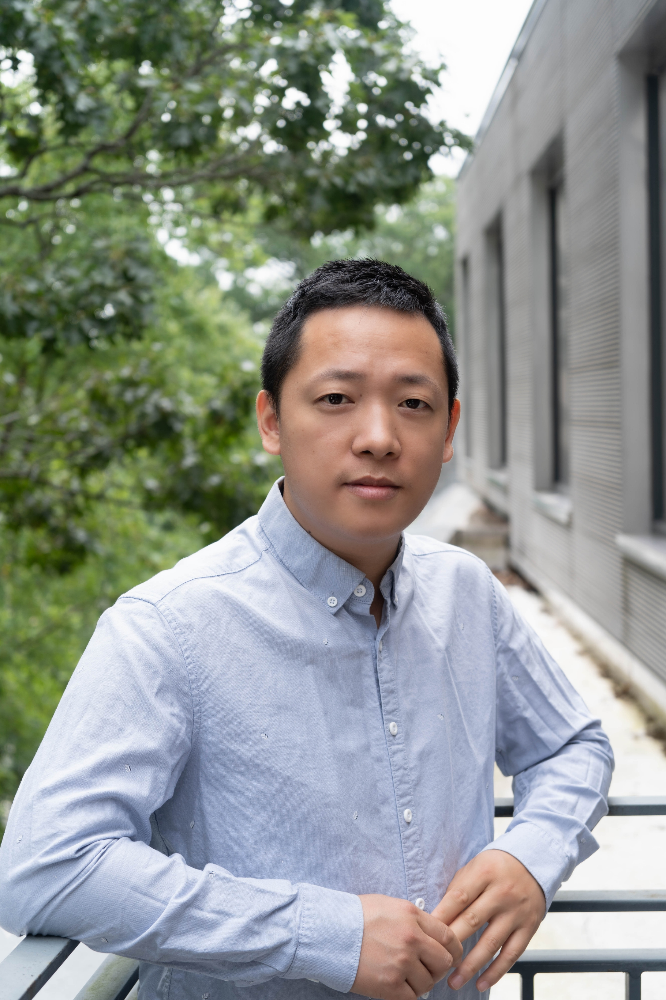
By combining analytical modeling, scientific machine learning, multiscale simulation, and biomedical data analysis, we study blood flow, red blood cell biomechanics, disease-related dynamics, and interpretable predictive models for biological systems.
Physics-informed neural networks, operator learning, and data-driven computational frameworks for biological systems.
Multiscale modeling of cells, tissues, and flows using mathematically grounded and computationally efficient approaches.
Hemodynamics, red blood cell mechanics, sickle cell disease, and predictive biomedical simulations.
Mechanical thrombectomy devices for clot reduction and removal, with research focused on spinning-induced fibrin densification, clot volume shrinkage, and translational treatment design.
Spleen-on-a-chip models for red blood cell filtration, splenic function, and predictive therapeutic evaluation.
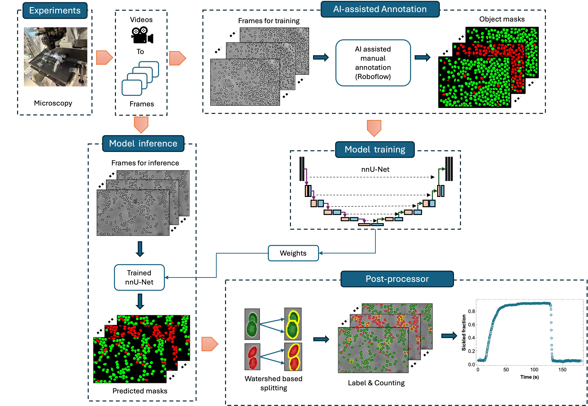
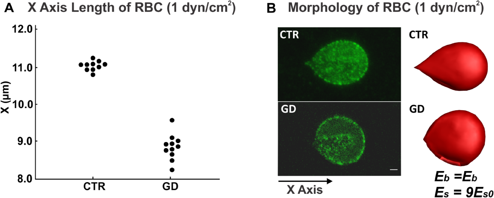
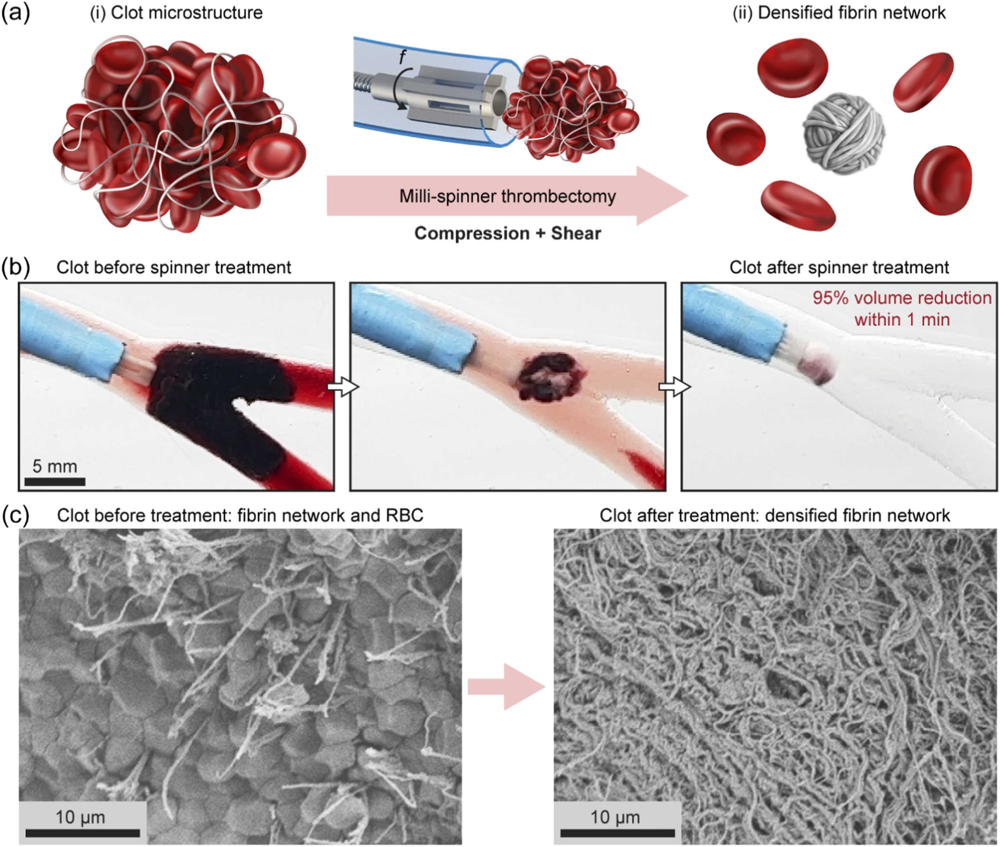
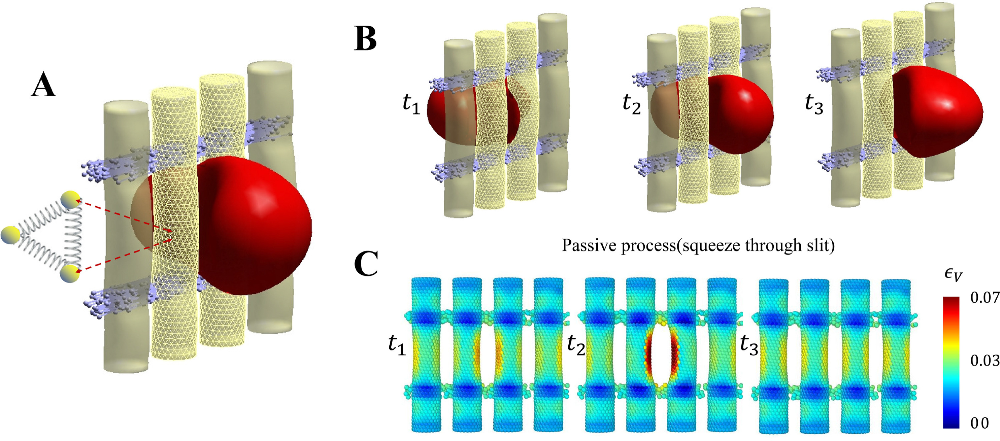
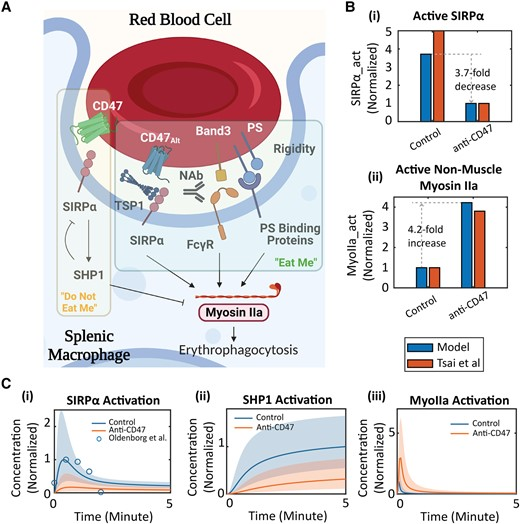
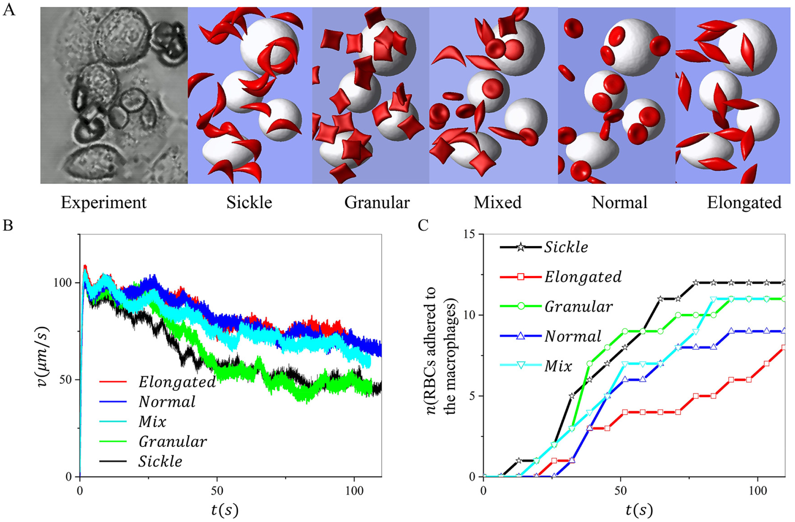
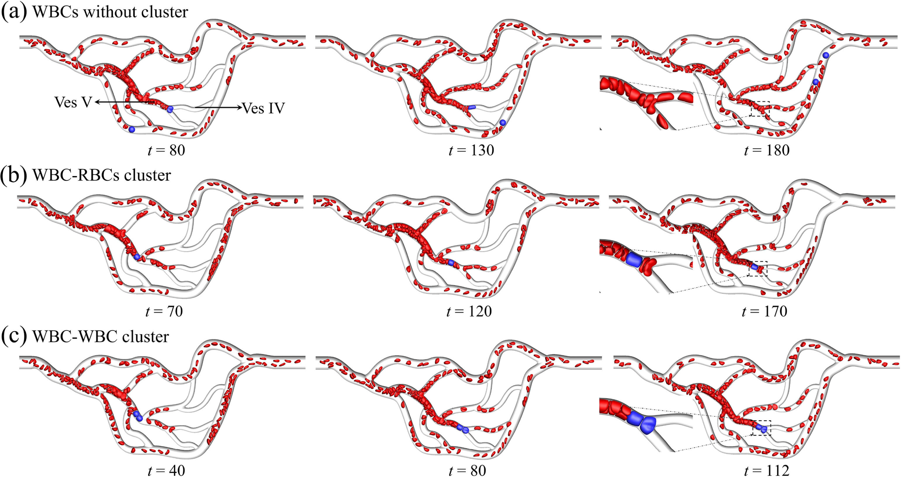
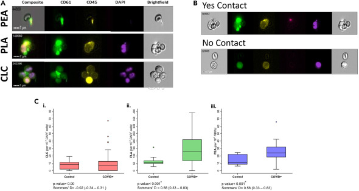
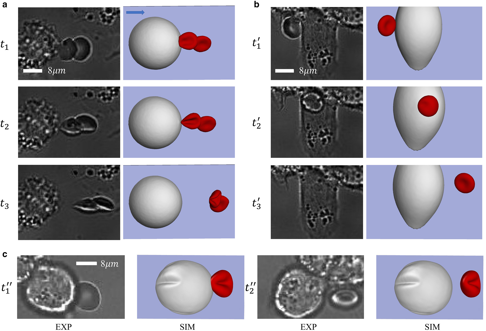
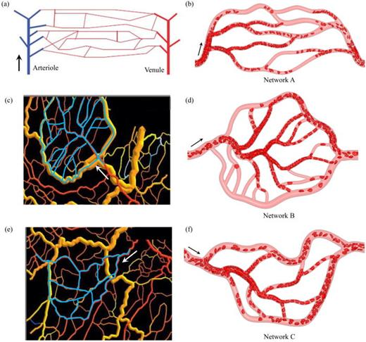
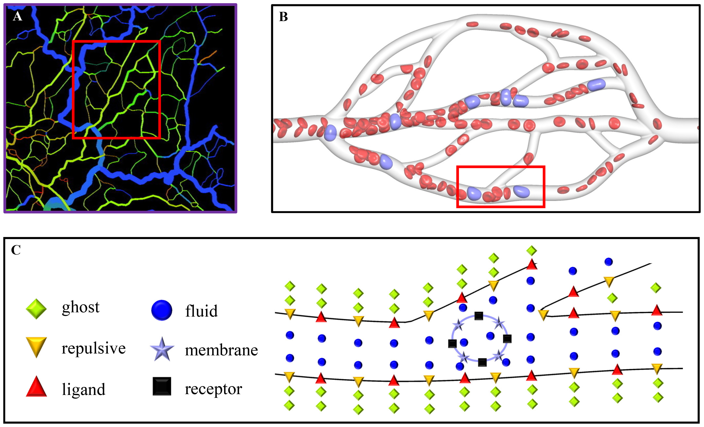
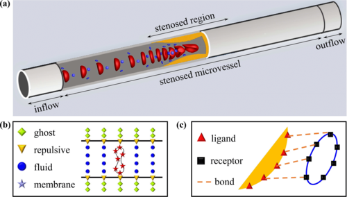
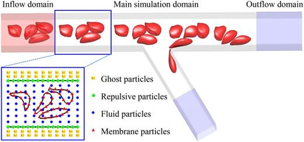
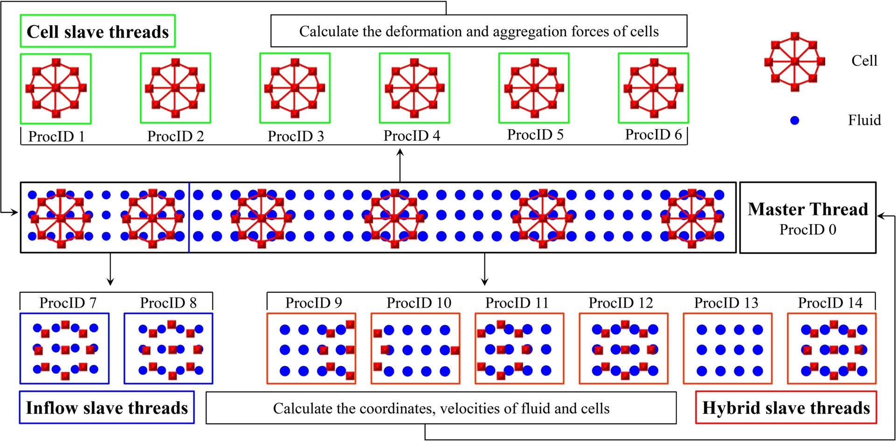
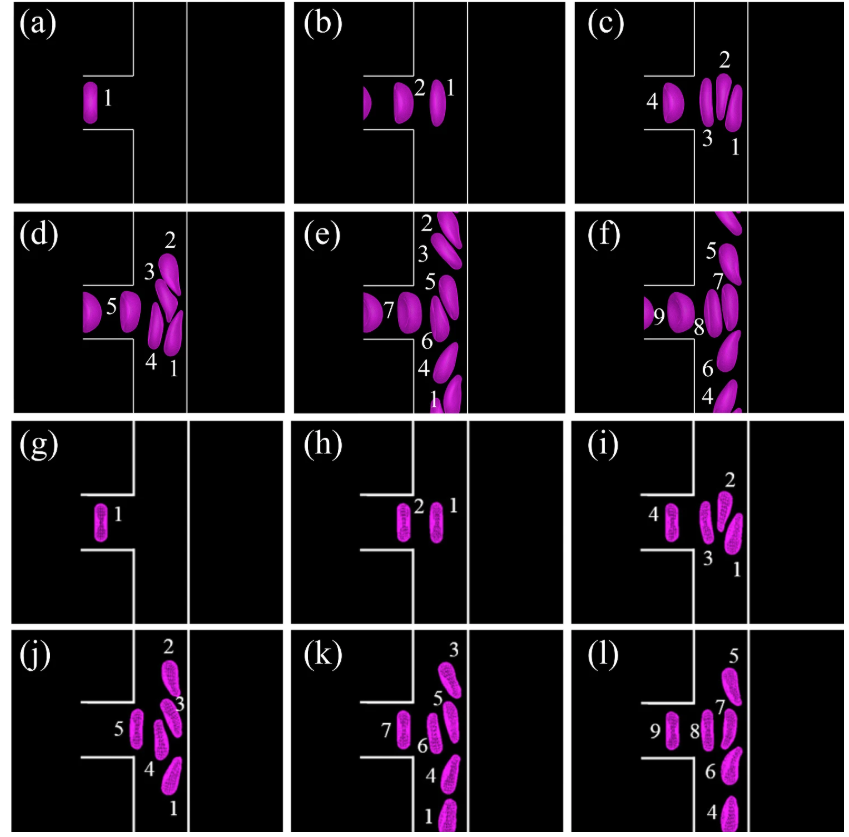
Principal Investigator, Department of Mathematics, Rowan University.
Information about current students, postdocs, and collaborators will be updated here.
Cross-disciplinary collaborations in applied mathematics, biomedicine, and scientific AI.
• The BioComp Group website is under development.
• Openings for students interested in scientific machine learning and biomedical computation.
• Updates on publications, grants, and talks will be posted here.
Course information, lecture materials, and mentoring activities will be shared here.
You can later add lab photos, group pictures, conference snapshots, and outreach images here.
The BioComp Group is seeking motivated PhD students and postdoctoral researchers in areas including multiscale biological modeling, scientific machine learning, blood flow, red blood cell biomechanics, and biomedical computation.
Applicants should have strong computational and programming skills, with backgrounds in applied mathematics, computational science, fluid mechanics, physics, computer science, biomedical engineering, or related disciplines. Experience in numerical methods, scientific machine learning, or high-performance computing is a plus.
To apply or inquire, please contact Prof. Guansheng Li at your_email_here with your CV and a brief description of your research interests.